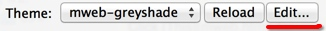
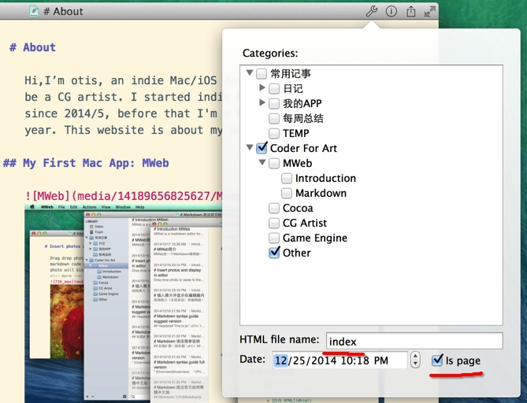

自定网站或博客主题简单说明
MWeb全部主题已上传到Github: https://github.com/oulvhai/MWeb-Themes.
MWeb主题模板结构
MWeb所有网站主题模板都放在SiteThemes这个文件夹里，点击  这里可以直接显示SiteThemes文件夹，一个文件夹就表示一个主题。每个主题里包含的文档和文件夹的作用如下：
- asset -- 主题所有要用到的东西，图片、CSS、JS等等都放这里
- archives.html -- archives.html页所使用的模板
- atom.xml -- RSS所使用的模板
- category.html -- 分类所使用的模板
- footer.html -- 页面的底部
- header.html -- 页面的顶部
- page-index.html -- 自定首页模板
- page.html -- 文档选中
Is page时所使用的模板 - post.html -- 文档不选中
Is page所使用的模板 - sidebar.html -- 侧边栏的模板
- sitemap.xml -- 网站sitemap所使用的模板
自定首页
如图，设定想要设置为首页的文档的 HTML file name 为 index, 选中 Is page 选项。

自定文档页的HTML模板
不选Is page选项时，生成HTML时读取的模板为：header.html+post.html+sidebar.html+footer.html。选中了Is page选项后，生成HTML时会读取的模板为：header.html+page.html+footer.html，如果要自定文档的模板，可以在主题文件夹里新增一个名称为：page-{HTML file name}.html 的页面，这样生成HTML时的读取的模板就会变成：header.html+page-{HTML file name}.html+footer.html。比如说要自定首页的模板，则在主题文件夹里新增一个名为：page-index.html 的页面即可。如 http://coderforart.com 就自定了首页，内容为：https://github.com/oulvhai/MWeb-Themes/blob/master/mweb-greyshade/page-index.html
自定分类页的HTML模板
分类页生成HTML时读取的模板为：header.html+category.html+sidebar.html+footer.html。 其中category.html可以自定，MWeb生成分类页的HTML时，会判定是否存在：category-{HTML file name}.html的模板，如果存在，则会优先使用category-{HTML file name}.html模板。比如说有一个分类的 HTML file name 为 Cocoa，如果要自定这个分类的分类页的模板，则只要在主题文件夹里新增一个名为：category-Cocoa.html的页面即可，MWeb生成HTML时读取模板就会变为：header.html+category-Cocoa.html+sidebar.html+footer.html。
生成HTML时传入模板页的变量说明
文档分类对象变量
| 变量名称 | 说明 |
|---|---|
| name | 分类的名称 |
| url | 分类的网址 |
文档对象变量
| 变量名称 | 说明 |
|---|---|
| title | 文章的标题，通常为第一行 |
| desContent | 文章的HTML格式的描述，如果文档中没有<!-- more -->则跟content一样 |
| desContentTextOnly | 文章的纯文字描述，不带HTML |
| content | 文章的内容 |
| date | 文章的时间，格式按网站设定，默认为：2014/10/24 |
| dateGTM | 文章的时间，格式为 2014-10-24T13:54:03GMT+08:00 |
| artDate | 文章新增的时间，格式按网站设定，默认为：2014/10/24 |
| cats | 文章分类的数组，数组的对象为文档分类对象变量 |
| readMore | 文章中是否有<!-- more --> |
| url | 文章的网址 |
最近文章变量
| 变量名称 | 说明 |
|---|---|
| title | 文章的名称 |
| url | 文章的网址 |
分类对象变量
| 变量名称 | 说明 |
|---|---|
| name | 分类的名称 |
| url | 分类的网址 |
| count | 分类的文章数量 |
生成网站
所有页面都会传入的变量
| 变量名称 | 说明 |
|---|---|
| siteURL | 网站设置中的网站网址 |
| siteDomain | 网站的域名 |
| siteName | 网站的名称 |
| pageTitle | 网站的标题 |
| siteDes | 网站的描述 |
| lastBuildDate | 网站最后生成时间 |
| mathJaxSupport | MathJax 支持的代码，1.3 新增 |
| seqAndFlowChartSupport | 顺序图和流程图支持的代码，1.3 新增 |
| commentAndShareCode | 评论和分享支持的代码，1.3 新增 |
| siteOther | 网站设置中的other |
| recentPosts | 数组，数组的对象为最近文章变量 |
| allCategories | 数组，数组的对象为分类对象变量 |
| categoriesTree | 二层分类树，数组，数组的对象为分类对象变量，外加children。请参考 https://github.com/oulvhai/MWeb-Themes/blob/master/octopress/sidebar.html |
生成RSS: atom.xml
读取的模板：atom.xml
传入的变量：
| 变量名称 | 说明 |
|---|---|
| posts | 数组，数组对象为文档对象变量 |
参考模板：https://github.com/oulvhai/MWeb-Themes/blob/master/octopress/atom.xml
生成所有文章的页面
读取的模板：header.html + post.html + sidebar.html + footer.html
传入的变量：
| 变量名称 | 说明 |
|---|---|
| post | 对象为文档对象变量 |
| postNav | 字典，带有next，prev两个对象，对象为 最近文章变量 |
参考模板：https://github.com/oulvhai/MWeb-Themes/blob/master/octopress/post.html
生成所有分类的页面
读取的模板：header.html + category.html + sidebar.html + footer.html
传入的变量：
| 变量名称 | 说明 |
|---|---|
| posts | 数组，数组的对象为文档对象变量 |
| prevPageUrl | 上一页的网址 |
| nextPageUrl | 下一页的网址 |
参考模板：https://github.com/oulvhai/MWeb-Themes/blob/master/octopress/category.html
生成所有文章选中Is page的页面
读取的模板：header.html + page.html + footer.html
传入的变量：
| 变量名称 | 说明 |
|---|---|
| posts | 数组，数组的对象为文档对象变量 |
| post | 对象为文档对象变量 |
参考模板：https://github.com/oulvhai/MWeb-Themes/blob/master/mweb-greyshade/page-index.html
生成archives.html
读取的模板：header.html + archives.html + footer.html
传入的变量：
| 变量名称 | 说明 |
|---|---|
| posts | 数组，数组对象请参考下表 |
| 变量名称 | 说明 |
|---|---|
| year | 文章年份 |
| title | 文章标题 |
| url | 文章网址 |
| cats | 文章分类的数组，数组的对象为文档分类对象变量 |
| date | 文章的时间，格式按网站设定，默认为：2014/10/24 |
| dateMonth | 文章月份 |
| dateDay | 文章日期 |
| dateYear | 文章年份 |
| dateGTM | 文章的时间，格式为 2014-10-24T13:54:03GMT+08:00 |
| artDate | 文章新增的时间，格式按网站设定，默认为：2014/10/24 |
参考模板：https://github.com/oulvhai/MWeb-Themes/blob/master/octopress/archives.html
生成sitemap.xml
读取的模板：sitemap.xml
传入的变量：
| 变量名称 | 说明 |
|---|---|
| archives | 数组，数组对象请参考下表 |
| pages | 数组，数组对象请参考下表 |
| nowDateGTM | 当前时间 |
| 变量名称 | 说明 |
|---|---|
| title | 文章标题 |
| url | 文章网址 |
| date | 文章的时间，格式按网站设定，默认为：2014/10/24 |
| dateGTM | 文章的时间，格式为 2014-10-24T13:54:03GMT+08:00 |
| artDate | 文章新增的时间，格式按网站设定，默认为：2014/10/24 |
参考模板：https://github.com/oulvhai/MWeb-Themes/blob/master/octopress/sitemap.xml